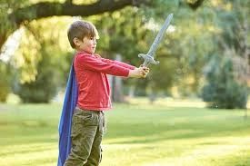

Fantasy Magic Sword
Explore Magical Quests
The Magic Sword toy captivates children with its intricate design and magical aura. Whether they are pretending to be knights, wizards, or adventurers, this toy sparks their imagination and transports them to fantastical realms.
The Magic Sword: A Gateway to Imagination and Learning for Kids
Introduction
The Magic Sword toy is more than just a plaything; it's a portal to a world of adventure, creativity, and learning. This 3D-printed fantasy sword is perfect for roleplaying and imaginative play, offering children endless opportunities to explore their creativity and develop important cognitive skills. In this article, we will delve into the benefits of the Magic Sword toy, highlighting how it can provide both fun and educational experiences for kids.
The Enchantment of the Magic Sword
The Magic Sword toy captivates children with its intricate design and magical aura. Whether they are pretending to be knights, wizards, or adventurers, this toy sparks their imagination and transports them to fantastical realms.
Features:
- 3D Printed: Crafted using advanced 3D printing technology for durability and detail.
- Fantasy Design: Features enchanting details that make it look like a real magical artifact.
- Interactive Play: Encourages active and imaginative roleplaying.
Cognitive Benefits of Roleplaying
Roleplaying with the Magic Sword toy offers numerous cognitive benefits that contribute to a child's development.
Benefits:
- Problem-Solving: Children create scenarios and challenges, enhancing their problem-solving skills.
- Critical Thinking: Deciding how to use the sword in various adventures fosters critical thinking.
- Memory: Remembering different storylines and characters improves memory retention.
The Power of Imagination
Imaginative play is crucial for a child's growth. The Magic Sword toy provides a perfect tool for children to unleash their creativity and explore new ideas.
Activities:
- Storytelling: Kids can invent stories and adventures, developing their narrative skills.
- Character Creation: Designing characters and roles enhances creativity and self-expression.
- World-Building: Imagining different settings and worlds fosters spatial awareness and creativity.
Fun Roleplaying Adventures
The Magic Sword toy is ideal for engaging children in fun and exciting roleplaying adventures. These activities not only entertain but also teach valuable lessons.
Adventure Ideas:
- Knight's Quest: Children can embark on a quest to rescue a princess or find a hidden treasure.
- Dragon Slayer: Create a storyline where kids must defeat a dragon, teaching bravery and perseverance.
- Wizard's Duel: Pretend to be wizards battling with magical swords, learning about strategy and teamwork.
Brain Activities with the Magic Sword
Playing with the Magic Sword toy stimulates various brain activities, contributing to cognitive development.
Activities:
- Strategic Thinking: Planning and executing adventures enhances strategic thinking.
- Spatial Awareness: Understanding how to navigate imaginary worlds improves spatial awareness.
- Language Skills: Storytelling and roleplaying boost vocabulary and language skills.
The Importance of Play in Child Development
Play is a vital part of a child's development. It helps them learn new skills, express themselves, and understand the world around them. The Magic Sword toy combines play with learning, making education a fun and engaging process.
Benefits of Play:
- Cognitive Development: Enhances problem-solving skills and critical thinking.
- Social Skills: Roleplaying with the sword can be a social activity, teaching kids to share and collaborate.
- Emotional Growth: Creative play allows children to express their emotions and build self-confidence.
Tips for Parents: Maximizing the Benefits of the Magic Sword
Parents can enhance the learning experience by incorporating the Magic Sword toy into various activities. Here are some tips to get started:
- Interactive Play: Spend time playing with the sword alongside your child, encouraging them to explore different adventures.
- Themed Learning: Use the sword to create themed lessons, such as a day dedicated to learning about medieval history or fantasy literature.
- Storytime: Combine the sword with storytelling. For example, create a magical story involving the sword's powers.
- Craft Projects: Use the sword for non-roleplaying activities, such as tracing its shapes onto paper for coloring or using it as a stencil for painting.
- Celebrate Achievements: Praise your child's efforts and creations, whether it's a new adventure or a creative story involving the sword.
Conclusion
The Magic Sword toy is a fantastic addition to any child's playtime. It offers a unique blend of fun and educational benefits, helping children learn new skills while having a great time. With its enchanting design and endless possibilities for imaginative play, the Magic Sword toy is sure to be a hit with kids and parents alike. So, the next time you're looking for a fun and brain-boosting toy, consider the Magic Sword and watch your child's imagination and cognitive abilities soar!